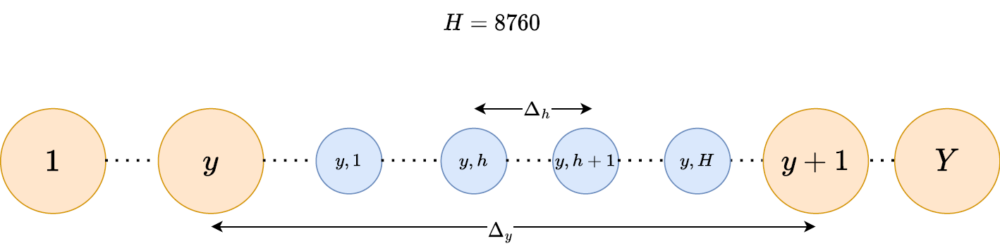

Tutorials
Introduction (2h)
Ce package à deux fonctions majeures, complémentaires, mais différentes :
Le dimentionnement et la gestion otpimal sur un axe optimization.
La simulation pour l'assessment des métriques sur le système.
Important definitions
Problem definition
Les décisions
Le terme dimensionnement fait référence à un problème (au sens de l'optimisation) de dimensionnement dans lequel il s'agit de décider de la meilleur taille pour chaque composant du réseau. On appel ces choix des décisions et un ensemble de valeur associé à ces décisions (une par décision) est appelé une solution. Le but étant de trouver la meilleure solution. Une solution, est considéré comme la meilleure si elle permet de maximiser une métrique (appelé critère ou objectif). L'objectif est généralement lié au coût global du système (en prenant en compte les années à venir) et on cherche alors à minimiser ce coût.
Le terme gestion lui fait référence à un autre problème (toujours au sens de l'optimisation) dans lequel il s'agit de décider du pilotage des composants du réseaux, notamment à travers les flux d'énergie. Il s'agit là aussi de prendre des décisions quand au pilotage du réseau.
 Ces décisions doivent être prises à interval réguliers. Pour cela 2 pas de temps sont considéré. Un pas de temps annuel $\Delta_y$ qui marquent les prises de décisions concernant le dimentionnement du réseau (au début de la simulation mais aussi pour les remplacements d'équipement ayant vieillis). Un pas de temps horaire $\Delta_h$ pour les décisions de gestions. ($\Delta_y = 8760 \cdot \Delta_h$). Dans ce réseau simple, les décisions d'investissement concernent la taille des panneaux solaires ainsi que de la batterie. Les décisions de gestion vont dicter pour chaque heure quelle puissance doit être dirigée vers/hors de la batterie, la puissance tirée du réseau. On remarquera que la puissance générée par le panneau solaire dépend de l'ensoleillement et de la taille de celui ci mais nullement des décisions de gestion. De même que la demande ne dépend nullement de ces décisions mais doit être assurée.
Il est alors possible de remarquer que ces deux problèmes sont imbriqués (comme un problème bi-niveau). En effet la meilleur façon de piloter les flux dépend de la taille des composants, voir même du choix des composants installés (un composant peut être dimensionné à 0). Par conséquent, le problème de gestion dépend de la solution proposée pour le problème de dimensionnement. De plus le problème de dimensionnement, pour évaluer la qualité de ses solutions doit proposer une solution au problème de gestion. Ainsi on remarque que ces 2 problèmes n'en sont en réalité qu'un seul.
Ainsi on désigne ce problème comme le problème de dimensionnement/gestion optimal des microrésaux.
Les contraintes
A cela il convient d'ajouter un volet contraintes (sur l'autonomie du réseau ou bien sa capacité à assurer la demande). Dans un problème d'optimisation, les contraintes sont un ensemble de restriction qui doivent être satisfaites pour qu'une solution soit considérée comme admissible (acceptable, recevable). Il s'agit de définir d'une part, le domaine de définition de chaque variable (min, max, positif, négatif ...) par exemple la capacité d'une batterie sera nécessairement positive. Ces contraintes simples impliquent une seule variable de décision. Il va également s'agir de définir des contraintes plus complexes permettant de vérifier l'équilibre des puissances du système. Enfin on peut définir des contraintes aux objectifs plus macroscopique comme par exemple sur l'autonomie du système. De plus amples détails sur la constructions de ces problèmes d'optimisations seront données plus tard dans ce cours.
Aspect Stochastique
Les solutions sont bien sûrs dépendantes des données d'entrées notamment concernant la demande énergétiques mais aussi concernant la production énergétique des énergies renouvelables. Une faible demande demandera mécaniquement des équipements moins importants. Dans ce cas si l'on venait à utiliser une consommation trop faible pour dimensionner le système, on choisirai surement des équipements trop petit, et bien sûr on peut imaginer le cas inverse et acheter des équipement plus gros et plus cher sans raisons, bref on aurait surdimensionné le réseau. Ces données d'entrée sont considérées comme aléatoire mais sont néanmoins régulièrement observée et peuvent donc être caractérisées. On considère alors qu'il est possible de prévenir partiellement le sur/sous-dimensionnement en utilisant un nombre important de scénarios de données considérés représentatifs des données aléatoires concernées. Dans ce contexte on cherche le dimensionnement qui à le coût moyen (sur l'ensemble des scénarios) le plus bas tout en satisfaisant les contraintes sur l'ensemble des scénarios.
TP1 prise en main (4h)
Identification des parties principales
Après avoir défini la tâche à réaliser qu'est le dimentionnement de micro réseau on peut aborder le sujet de la méthode. Pour cela on va s'attaquer à un exemple simple et identifier les différentes partie principale à considérer. Ces différentes parties seront plus tard plus amplement explorées jusqu'a permettre d'en créer de nouvelles versions.
On va ici présenter le processus de dimentionnement comme
Premier script
La simulation consiste à attribuer des décisions aux différentes variables (ces décision peuvent venir de résultats d'optimisation comme de décisions arbitraires) avec d'observer le comportement du réseau durant une durée défini au préalable. Grâce à cela il est possible d'extraire des métriques afin d'évaluer les décisions prises.
Cela peut sembler étonnant, "nul besoin d'analyser dans le cas de l'optimisation, la solution est déjà la meilleure par définition". En réalité c'est plus compliqué que cela.
D'une part les modèles utilisable par certaines méthodes d'optimisation sont limités, la programmation linéaire par exemple, bien que très rapide nécéssite de modéliser l'ensemble du système via des équations linaires ce qui révient à faire un certains nombre de simplification et d'abstraction du système. Dans le cadre de la simulation l'inclusion de modèle complexe n'est pas un problème car on décrit l'évolution du système d'état en état. Cette différence implique que les solution trouvées via l'optimisation de sont pas nécéssairement les mêmes si les modèles qui décrivent le système sont différent.
D'autre part les données d'entrer utilisée pour décrire un certain nopmbre de paramètres aléatoires (l'ensoleillement, la consommation ...) doivent être similaires mais différentes entre une phase de dimentionnement et une pahse de simulation. Dans le cas contraire un phénomène d'overfitting peut avoir lieu, le réseau est très adapaté à un scénario d'évennement qui n'arrivera pas car les données représente un profil crédible mais il est évident que la météo dans 5 ans n'a pas encore été prévue et qu'il est par conséquent impossible de prévoir l'ensoleillement à ce moment.
Input data
Le réseau est opéré à un pas de temps $\Delta_h$ qui doit être fixé, généralement une heure, et ce pendant un horizon temporel $\mathcal{Y}$ qui désigne le nombre d'année. Il convient donc de fournir des données d'entrée adaptées à ce pas de temps et cet horizon temporel. Afin d'adresser le charactère aléatoire de ces données, il est même envisagé d'utilisé plusieurs séries temporelles. Ces données doivent généralement être basée sur des données réelles cohérentes avec la consommation et la production d'énergie du réseau étudié. On appel l'ensemble de ces données d'entrée un scénario. On peut inclure dans ce scénario l'ensemble des données d'entrée nécessaire à décrire le contexte dans lequel évoluera le réseau (prix des composants, demande, génération, prix de l'électricité en achat et vente)
Comme ces données sont rares et peu disponibles en quantité, une méthode de génération de scénario à partir d'un ensemble réduit permet de palier à ce problème. Ces méthode est décrite dans ce papier
Data construction
Il est nécéssaire de créer des données adaptées à chaque cas particulier. En effet les méthodes pour le dimentionnement sont considéré généralisables car les données dentrée permettent de les adapter à chaque cas d'étude.
{Définir et insérer une réflexion sur le processus de collecte et de mise en place des données d'entrée} {Ajouter que cette partie est une introduction et qu'un chapitre detaillé sur le sujet viendra plus tard}
Data usage
First case : Find the optimal sizing for an exemple microgrid
Grid construction
Constant declaration
La première chose à faire est de définir 3 constantes, une première ny pour le nombre d'année sur lesquels on souhait étudier le réseau. Une seconde nh pour définir le nombre de décision par année, généralement 8760 (24*365) pour une phase de décision de gestion par heure. Enfin une troisième ns pour définir le nombre de scénarios qui seront considérés.
Enfin l'outil est pensé pour adresser aussi bien des réseau isolé que connecté, il s'agit également de définir le niveau d'autosuffisance attendu pour le réseau. Cela sera formulé sous forme de contrainte et dans le cas ou ce minimum est fixé à 100% le réseau sera considéré comme autonome.
(Parler de la prossibilité de voir le grid comme une source non reouvellable et qu'il est tout à fait possible de créer un nouvel asset ou bien de se servire du grid comme un groupe éléctrogène. Connaissant le prix de l'essence et le rendemment du groupe electrogène on arrive vite à un prix de l'éléctricité.)
Une fois ces constantes défini on peut alors créer une structure Microgrid.
const nh, ny, ns = 8760, 21, 16
mg = Microgrid(parameters = GlobalParameters(nh, ny, ns, renewable_share = 1.))Ici on a donc un réseau isolé opérer sur 20 ans, heure par heure, et prêt à être analyser à travers 16 scénarios (Adresser le concept de la première année. pourquoi 20 ans alors que ny = 21)
Component selection
Il s'agit alors d'ajouter à ce microgrid un ensemble de composant choisi parmis une liste de composants existant et pouvant être classifiés comme suit : (la liste des composant n'est peut être pas exhaustive)
- Les generateurs (PV panel, wind turbine, fuel cell ...), pour la production des energies.
- Les stockeurs (H2 tank, Li-ion battery, thermal storage ...) Pour le stockage des energies.
- Les convertisseurs (Heater, electrolizer ...) Pour la conversion des énérgies.
- Les sources externes (Electric grid, genset ...) Pour répondre à la demande si les générateurs sont insufisants.
- La demande (Electrique, chaleur ...) Pour définir les besoins, cet élément permet de définir les type d'énergies qui seront attendues.
Le code suivant permet d'ajouter au microgrid mg une demande éléctrique, un panneau solaire, une batterie li ion et de connecter le micrgrid à un réseau éléctrique.
add!(mg, Demand(carrier = Electricity()),
Solar(),
Liion_energy_exchanged(),
Grid(carrier = Electricity()))Ce qui amène au réseau suivant {IMAGE GRID}
On peut alors associé les données défini à la section précédente à ce réseau avec le code suivant :
ω_d = Scenarios(mg, data["data"]; same_year=true, seed=1:ns){Ajuster ce code pour qu'il soit très clair d'un point de vue pédagogique.}